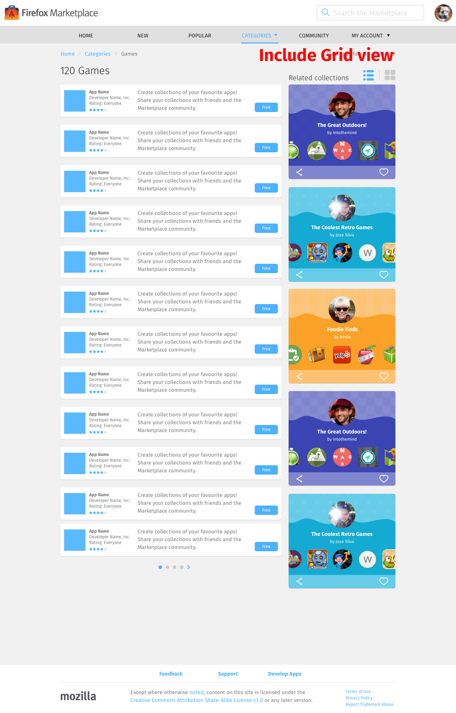

<div class="container">
	<div class="row">
		<div class="col-sm-12 col-md-12 col-lg-12">
			<h1>Categories</h1>
			
			<p class="longText">A list view of apps within a category.</p>
			
			<ol class="longText">
  			<li><strong>Quantity:</strong> as many apps in the category as available.</li>
  			<li><strong>Order:</strong> Most to least popular.</li>
			</ol>
			  
		  <h3 class="specItem">Mobile</h3>
		  
		  
		  
		  <p class="longText warning">Do an animation of the process below.</p>
		  
		  <ol class="longText">
		    <li>Selecting the Categories navigation item will take user to a separate page with a grid list of category icons.</li>
		    <li>Selecting a category icon will take user to a list view of apps in that category.</li>
		    <li>Selecting the Categories navigation item again will make the categories grid slide up from the bottom of the screen.</li>
		  </ol>
		  
		  
		  
      <ol class="longText">
        <li>The page can display unlimited rows of app units.</li>
        <li>Each row contains 1 app units in both list view and grid view.</li>
        <li><strong>Size of each unit:</strong> 4 columns in both list view and grid view.</li>
      </ol>
		  
		  <h3 class="specItem">Tablet</h3>
		  
		  
		  
		  <p class="longText">Selecting the Categories navigation item will show a popup menu with a list of categories. Selecting a category will take user to a list view of apps in that category.</p>
		  
		  
		  
		  <ol class="longText">
		    <li>The page displays 8 rows of app units.</li>
		    <li>Each row contains 1 app unit in both list view and grid view.</li>
		    <li><strong>Size of each unit:</strong> 8 columns in both list view and grid view.</li>
		    <li>Use the pagination dots and arrows to navigate through the app units.</li>
		    <li>Every tap of the pagination arrow scrolls the app units to the previous/next 8 apps on the list.</li>
		  </ol>
		  
		  <h3 class="specItem">Desktop</h3>
		  
		  
		  
      <p class="longText">Similar to the Tablet layout, celecting the Categories navigation item will show a popup menu with a list of categories. Selecting a category will take user to a list view of apps in that category.</p>
		  
		  
		  
		  <ol class="longText">
		    <li>The page displays:
		      <ul>
		        <li>12 rows of app units.</li>
		        <li>5 rows of “Related collections” units.</li>
		      </ul>
		    </li>
		    <li>Size of each unit:
		      <ul>
		        <li>Each app unit occupies 8 columns.</li>
		        <li>Each “Related collection” unit occupies 4 columns.</li>
		      </ul>
		    </li>
		    <li>Use the pagination dots and arrows to navigate through the app units.</li>
		    <li>Every click of the pagination arrow scrolls the app units to the previous/next 12 apps on the list.</li>
		  </ol>
			  
		</div>
	</div>
	<!-- Pagination. If you have more than one page, set the multipage variable in the Frontmatter to true. Editing the pagination code happens in /_includes/homePagination.html.
		NOTE: This is currently broken in the Jekyll ver of this template.
		-->
		{% if page.multipage %}
			{% include homePagination.html %}
		{% endif %}
